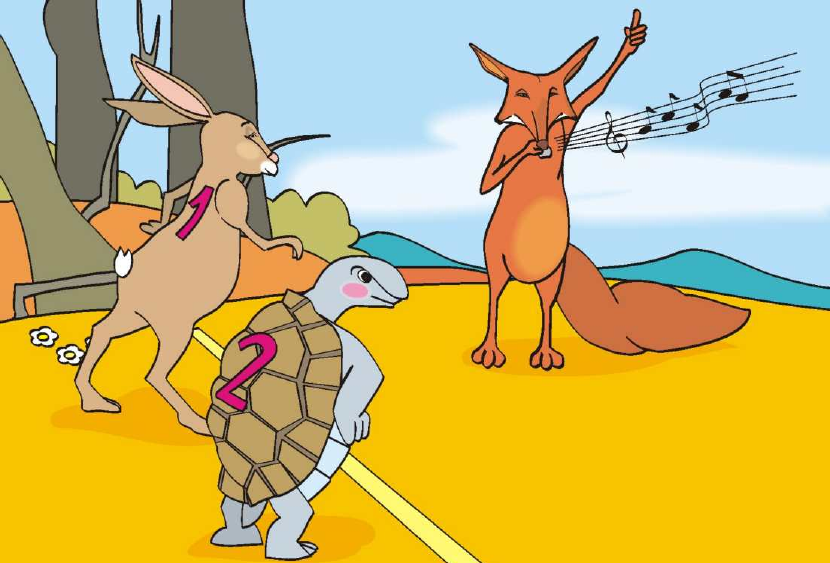
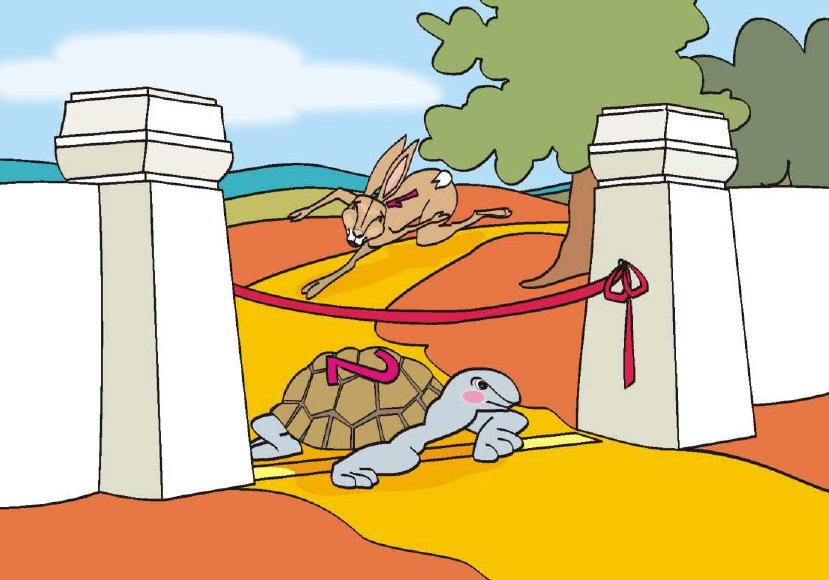

❧ Los Personajes ❧
La Liebre
⚡ Veloz · 😤 Presumida
La Tortuga
🎯 Constante · 🧘 Paciente

— Capítulo I —

— Capítulo II —
— Capítulo III —
La Siesta Fatal
La liebre corrió tan rápido que pronto dejó a la tortuga muy atrás.
Confiada en su enorme ventaja, decidió descansar bajo la sombra de un árbol.
"Tengo tiempo de sobra", pensó. "Esa tortuga jamás podrá alcanzarme."
Y así, entre la brisa, la liebre cerró los ojos y se quedó profundamente dormida.
— Capítulo IV —
Paso a Paso
Mientras la liebre roncaba, la tortuga siguió su camino sin descanso alguno.
Un paso, y otro, y otro más. Sin prisa pero sin pausa.
Con determinación, pasó junto a la liebre dormida y siguió adelante, sin mirar atrás.

✦ Lento pero constante gana la carrera ✦
Una Fábula de Esopo
La Liebre
y la Tortuga
👆 toca para pasar las hojas
La Liebre
Veloz y presumida
Pasa el cursor ↻Era la más rápida del bosque. Siempre ganaba y se burlaba de todos.
La Tortuga
Lenta pero constante
Pasa el cursor ↻Era tranquila y perseverante. Nunca se rendía, avanzaba paso a paso.
El Desafío
En un soleado día, la orgullosa liebre se cruzó con la tortuga y empezó a reírse de ella.
"¿Para qué caminas si nunca llegarás a ningún lado?", le dijo entre carcajadas.
La tortuga respondió con calma: "Te reto a una carrera. Veremos quién llega primero."
La liebre, confiada, aceptó sin pensarlo dos veces.
¡A correr!


¡La tortuga cruza la meta!
¡La Victoria!
Cuando la liebre despertó, ya era demasiado tarde. La tortuga cruzó la meta entre los aplausos de todos los animales del bosque.
La liebre corrió con toda su fuerza, pero no pudo alcanzarla. ¡La tortuga había ganado!
Avergonzada, la liebre comprendió: "La constancia vence al orgullo."